What fabrics does YAQIXIN focus on?
Plain cotton fabric, tulle mesh fabric, denim fabric, lace fabric and satin fabric, with product pages for specific SKUs and category routes.
About YAQIXIN
YAQIXIN is a Guangzhou wholesale fabric supplier for overseas apparel buyers, wholesalers and sourcing teams. The work is simple: help buyers find the right fabric route, review real supplier proof, develop custom fabric when needed and prepare orders for export delivery.
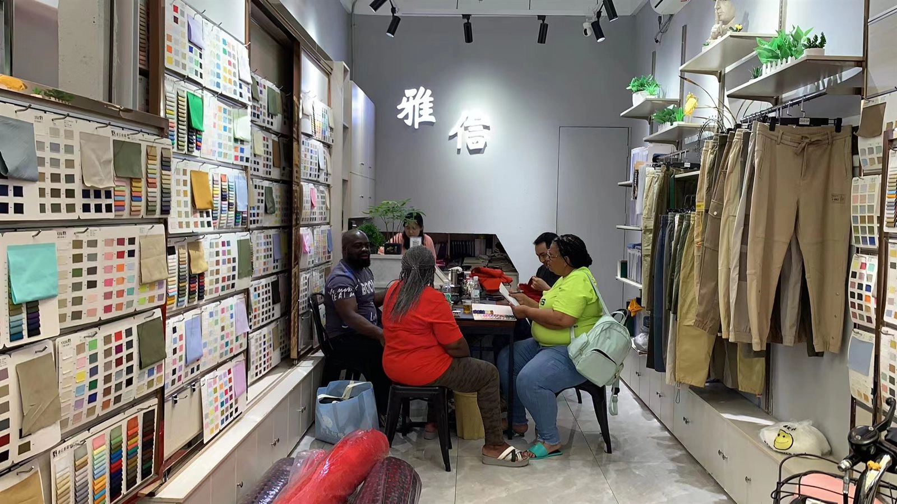
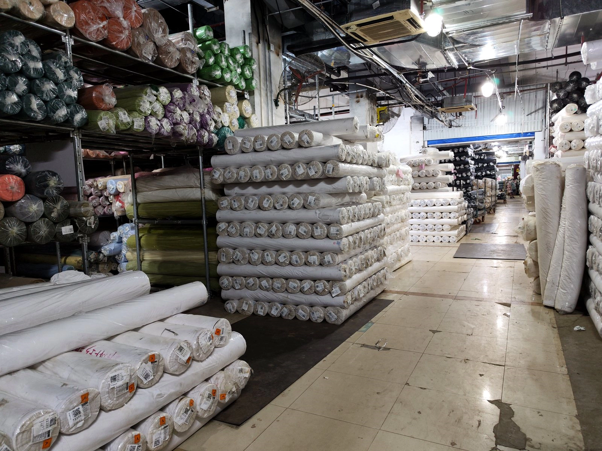
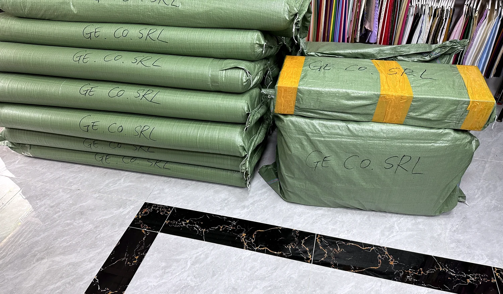
Buyer trust summary
Instead of splitting proof across separate pages, this page keeps the main trust information together: product range, custom development, supplier assessment, showroom proof and export packing.
How buyers use YAQIXIN
The page is designed for scanning. A buyer can move from product discovery to custom development, supplier verification and delivery proof without opening three separate navigation items.
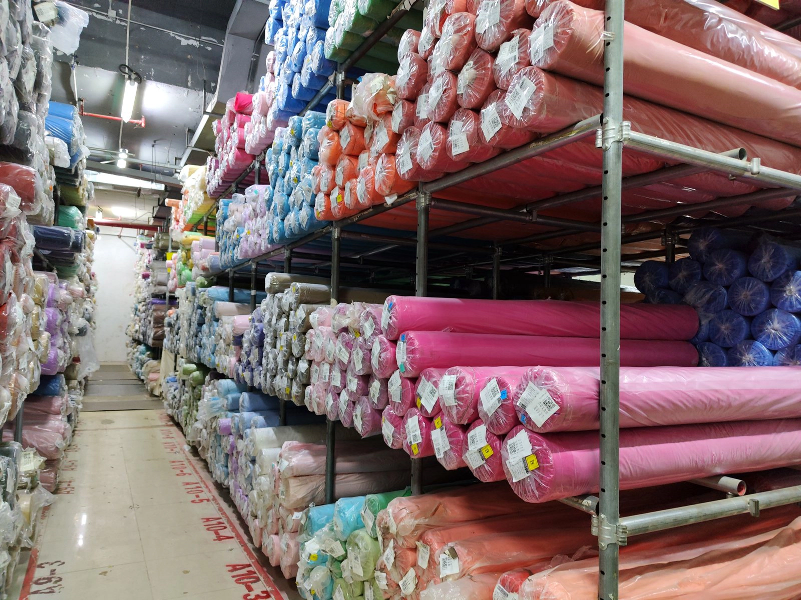
Plain cotton, tulle mesh, denim, lace and satin product routes for buyer comparison.
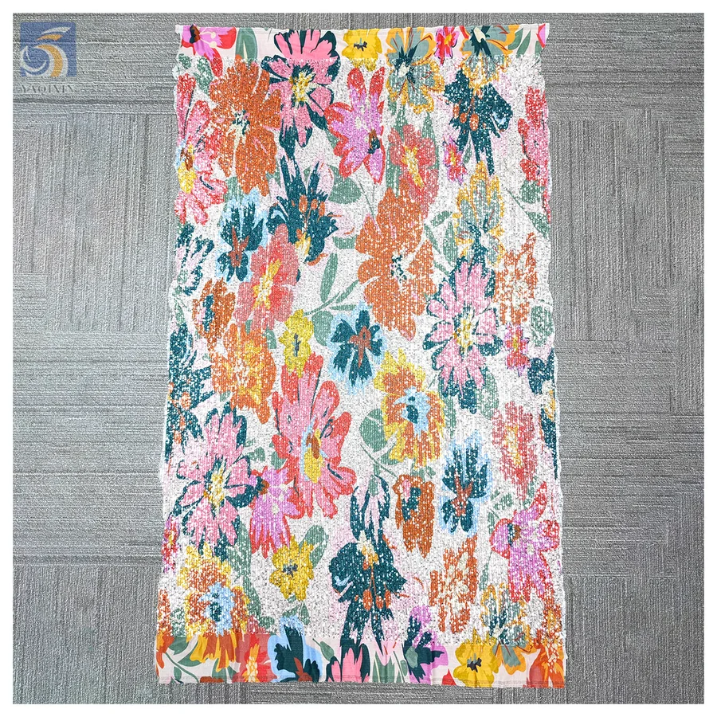
Flocking, sequin embroidery, digital printing and pattern development for buyer-specific orders.
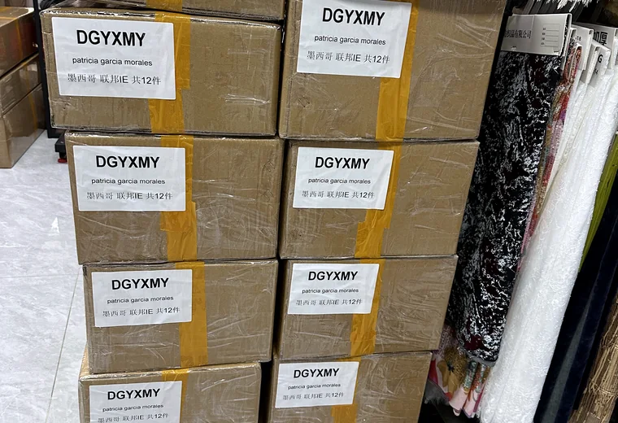
Packing, polybag protection, carton marks and shipment preparation before dispatch.
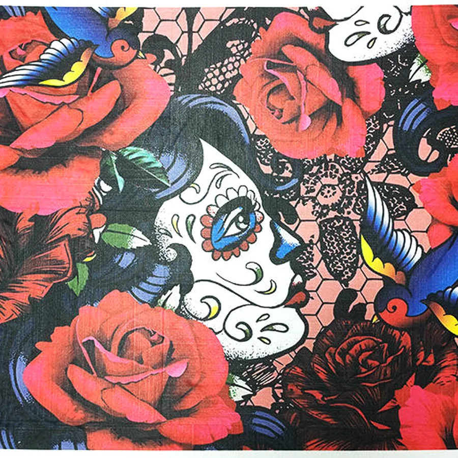
Custom capability
Send reference pictures, artwork, target color, base fabric, width, quantity and delivery target. YAQIXIN can review custom flocking, sequin embroidery, digital printing and regional pattern development routes, then discuss MOQ, sample direction and export packing early.
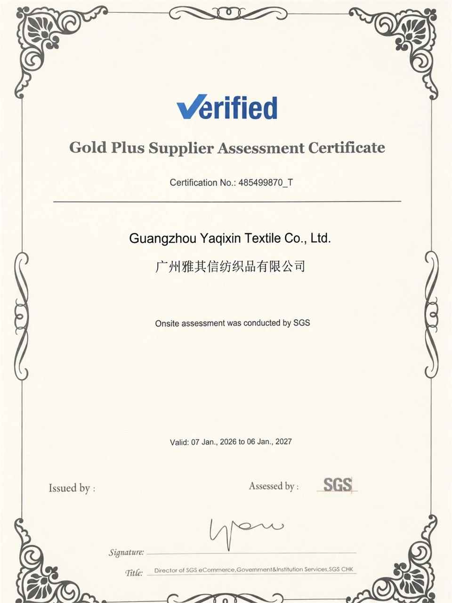
Certification and supplier proof
Supplier assessment does not replace fabric sampling, but it helps overseas buyers connect the quotation to a visible company record before sharing artwork, color targets or bulk order plans.
Shipment readiness
Buyers can discuss roll length, polybag protection, carton marks, receiving requirements and destination market together with MOQ and delivery timing.
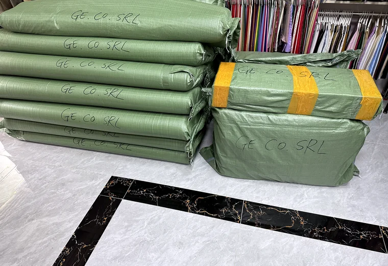
Roll packing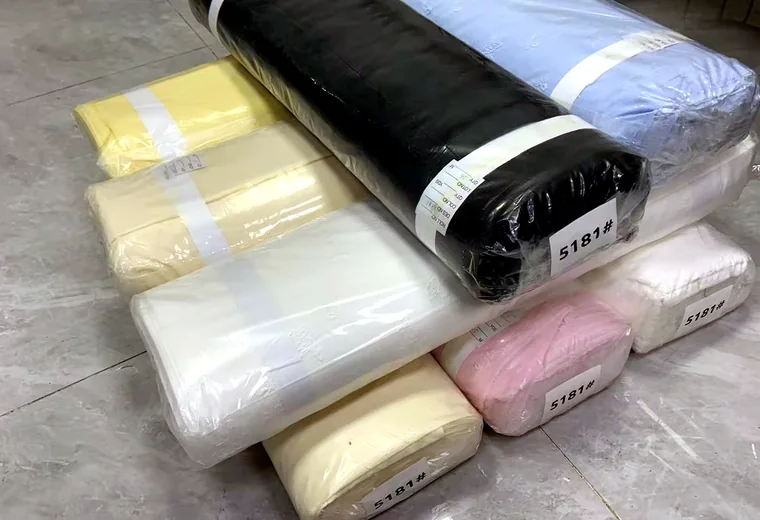
Polybag protection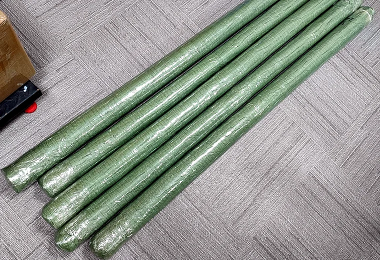
Delivery planningCustomer visits
Showroom photos make the company feel less abstract. Buyers can see fabric walls, sample discussion and in-person review before starting a WhatsApp or email inquiry.
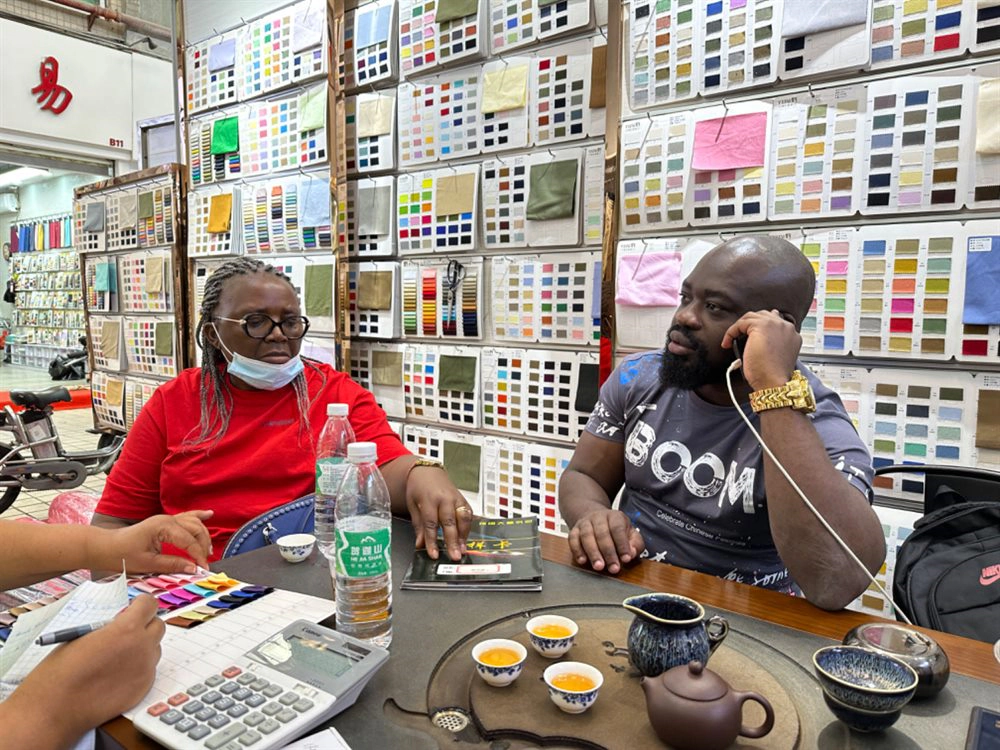
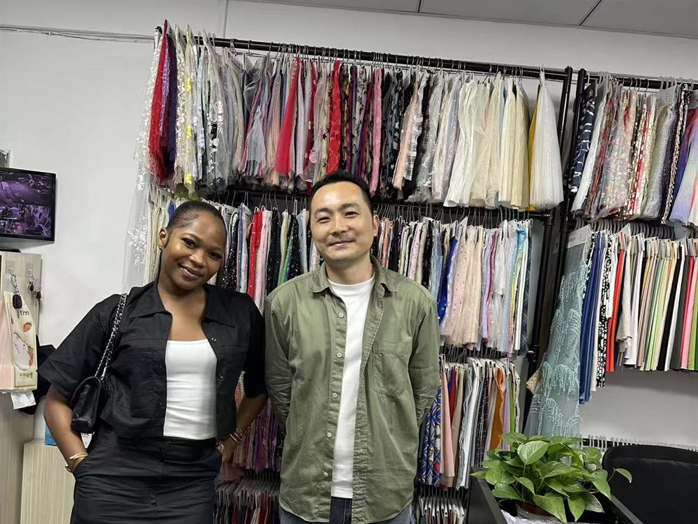
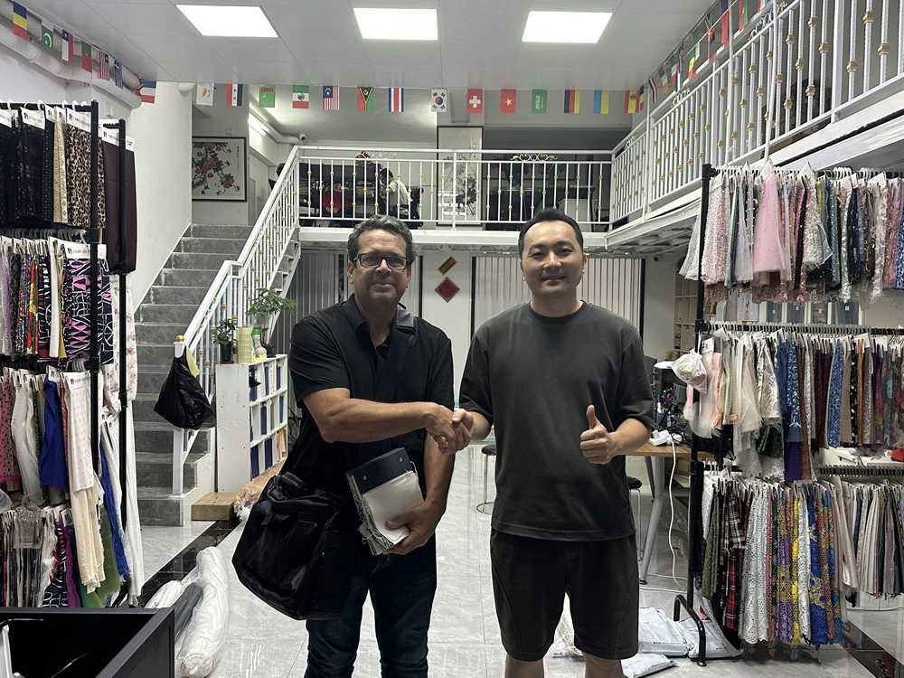
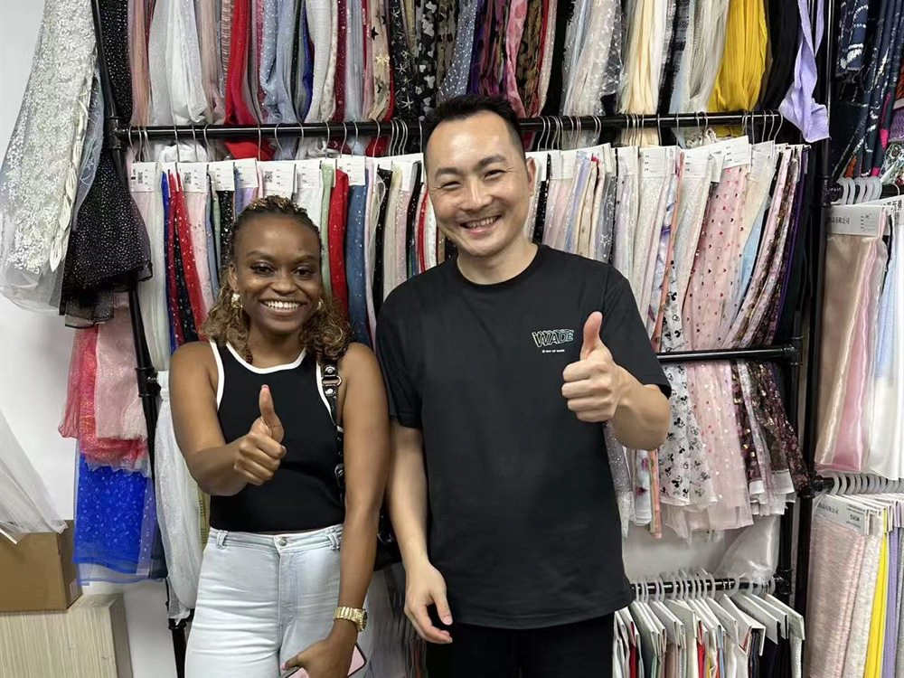
FAQ
Written for clarity rather than keyword stuffing: what YAQIXIN supplies, what buyers should send and how the team handles custom and export details.
Plain cotton fabric, tulle mesh fabric, denim fabric, lace fabric and satin fabric, with product pages for specific SKUs and category routes.
Fabric type, color, width, quantity, application, target market, delivery target and any reference images or artwork if custom work is needed.
Yes. Review the SGS assessment, showroom photos, factory images and shipment preparation sections before sending detailed order requirements.
Choose a product route, send your reference or order details, and YAQIXIN will reply with MOQ, price logic, custom route and packing preparation.